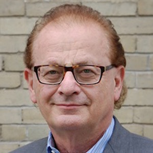

Andrew Wilkinson
Minister of Advanced Education, BC Government
TALK: Conference Welcome Address
ABSTRACT:
to be announced
BIO:
Andrew Wilkinson was appointed Minister of Advanced Education on December 18, 2014. Previously he served as Minister of Technology, Innovation and Citizens' Services from June 2013, after being elected MLA for Vancouver-Quilchena in the 2013 General Election. He is a former deputy minister of the British Columbia Ministry of Economic Development, where he had responsibility for economic issues, trade and tourism. He also served as deputy minister for Intergovernmental Relations in the Premier's Office for two years. Prior to his election as MLA, Wilkinson worked as a lawyer in the Vancouver offices of a major national law firm. Prior to being called to the bar, Wilkinson was educated and licensed as a physician. He lived and worked as a doctor in Campbell River, Lillooet and Dease Lake. He holds degrees from the University of Alberta, Dalhousie University, and Oxford University, where he attended as a Rhodes Scholar. He has also served as president of the BC Civil Liberties Association and president of the BC Mountaineering Club, and president of the BC Liberal Party.
Ralf Groene
Head of Industrial Design Microsoft Devices @ Microsoft
TALK: to be announced
ABSTRACT:
to be announced
BIO:
Ralf Groene directs the Industrial Design team for Microsoft's devices, such as Surface, Phones, Xbox and others. The team consists of industrial, digital, material, and interaction designers. Ralf started out as a tool maker at Volkswagen AG in Wolfsburg, Germany. Soon after he expanded his interest from tool making to product making. He studied industrial design at the Muthesius University in Kiel, Germany. Ralf moved to Silicon Valley in 1997, working for Hartmut Esslinger at frogdesign and co-led IDEOís ID studio in Palo Alto. Ralf joined Microsoft in 2006.
Jeremy Hilton
Vice President, Processor Development @ D-Wave Systems
TALK: A Brief History of Scalable Quantum Computing
ABSTRACT:
Quantum computing is a nascent field and D-Wave Systems is the only company in the world to build scalable quantum processors. Having produced three generations of quantum computing technology we have a unique perspective on the field and where it is heading. From the advent of the famous Shor algorithm for factoring in 1994 to some of the innovations behind D-Wave's quantum processors, this talk will provide an overview of the major developments in quantum computing and how this exciting field is growing.
BIO:
Jeremy Hilton joined D-Wave directly after obtaining his BSc. in Physics from the University of British Columbia. Since 2004 he and his team of engineers and scientists have created a world-class R&D facility and built the world's first scalable quantum processors. Mr. Hilton also led the creation of the most advanced superconducting integrated circuit foundry, where D-Wave's quantum processors are produced. Mr. Hilton has brought technical leadership to projects ranging from design, model, and test of superconducting integrated circuits to the development of low-noise superconducting fabrication processes, and has led the teams responsible for aggressively scaling D-Wave’s quantum computers. Mr. Hilton is a named inventor on 28 granted US patents.

Kip Morison
Chief Information Officer @ BC Hydro
TALK: to be announced
ABSTRACT:
to be announced
BIO:
Kip Morison has over 30 years of experience in the electric utility business and is currently the Chief Information Officer for BC Hydro in Vancouver, Canada. Prior to his current role, Kip was Chief Technology Officer since joining BC Hydro in 2010. Kip’s industry experience includes roles as Manager of Long Term Planning and R&D at the British Columbia Transmission Corporation, Director of Power System Technologies at Powertech Labs, and Senior Engineer at Ontario Hydro. Kip holds degrees in Electrical Engineering from the University of Toronto and is a registered professional engineer and an IEEE Fellow.
Alan Thompson
Chief Information Officer @ BC Hydro
TALK: Canadian Spaceborne Radar - Yesterday, Today, and Tomorrow
ABSTRACT:
Canada has an illustrious history in spaceborne radar remote sensing (SRRS). Civilian SRRS started with SeaSAT, a NASA mission in 1978. Canada was involved and in fact MDA produced the first digitally processed satellite synthetic aperture radar (SAR) image from SeaSAT data. Canada went on to develop a sequence of SAR satellites, with RADARSAT-1 launched in 1995 and operating until 2013, RADARSAT-2 launched in 2007 and currently operating, and the RADARSAT Constellation Mission currently under development with a planned launch in 2018. In this talk, an overview of spaceborne SAR in Canada will be given, from SeaSAT, to the RADARSAT Constellation Mission, and beyond.
BIO:
Alan Thompson is the Chief Systems Engineer on the RADARSAT Constellation Mission (RCM), at MDA. RCM is a constellation of three Synthetic Aperture Radar (SAR) satellites being developed by MDA for the Canadian Space Agency. Alan has worked on RCM since its very beginning as a study in 2003 until the present, where the program is in the manufacturing stage. Alan joined MDA in 1999 to work on RADARSAT-2 as a senior systems engineer. Prior to working at MDA, Alan worked on RADARSAT-1 SAR processing at Array Systems in Toronto. Alan has a Ph.D. in mathematics from MIT (in the field of integral geometry). While his degree was in pure mathematics, the radar imaging systems he currently works on are applications of the types of mathematics he used to study and develop.

Andrew Goldenberg
Professor @ University Of Toronto
TALK: Evolution of Robotic Technology and Business: Past-Present-Future
ABSTRACT:
This talk will review robot technology and how to use it to create a sustainable job-generating business. The technology is used in mobile robots for defense and security; industrial robots for manufacturing; mobile and industrial robots; modular robot arms for space applications; custom robotics for nuclear plants, gas pipes, laboratory automation, image-guided medical surgery; and personal robots for remote telecommunication, domestic help, and private security.
BIO:
Andrew Goldenberg obtained his PhD in 1976 from the University of Toronto, and his MSc and BSc degrees from the Technion, Israel Institute of Technology, in 1969 and 1972, respectively. He is the founder of the field of Robotics at University of Toronto where he has been since 1982 as a Professor of Mechanical and Industrial Engineering, cross appointed in the Institute of Biomaterials & Biomedical Engineering, and previously cross-appointed in the Electrical and Computer Engineering. Dr. Goldenberg is also an Adjunct Professor at Ryerson University and Guest Professor at Nanjing University of Science and Technology, P.R. China. From 1975-1981 Dr. Goldenberg has been an employee of SPAR Aerospace Ltd., of Toronto, working on the development of the first Space Shuttle Remote Manipulator System (Canadarm). His research interests cover mobile and industrial robots; modular robot arms for space applications; custom robotics for nuclear plants, gas pipes, laboratory automation, image-guided medical surgery; and personal robots for remote telecommunication, domestic help, and private security.